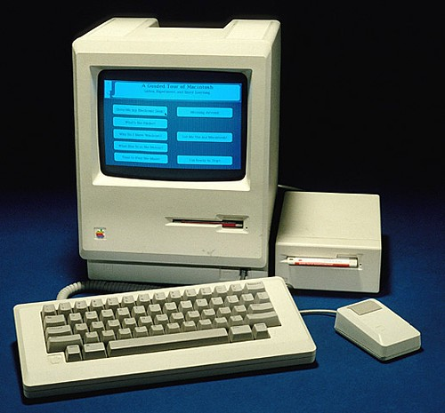

This page is all about my Information Technology class! This class taught
me how to make this website, work with HTML, Linux, Javascript, and different
varieties of hardware! It is part of my school's CTC program that works with Sinclair,
giving students experience in their chosen career field and provide work experience
to students that otherwise wouldn't have the opportunity.
Class Quotes
"IT offers the hands on experience with coding projects and
computer equipment"
"I love the environment and gettinng to work with like-minded
students on projects"

IT Class
My IT Class
The basic school decription of the class offered covers one of the
fastest-growing career fields with high-paying, in-demand jobs.
Students study PC applications, operating systems, network
construction and configuration, software programming and design,
hardware construction and maintenance, the fundamentals of electronics,
web page design, databases and virtual machines using Operating Systems
such as Windows, OSX, Linux and Android. Students participate in the
Business Professionals of America student organization.